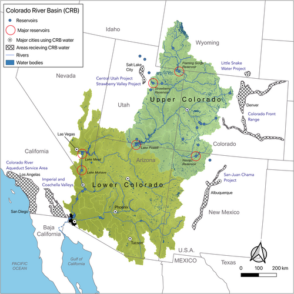
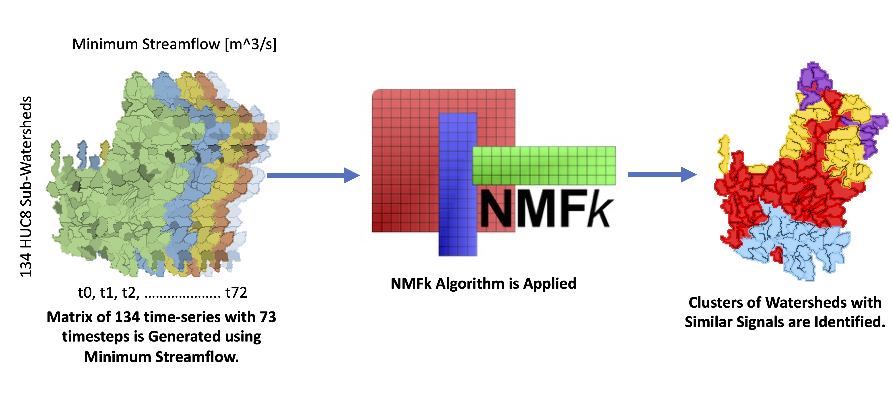
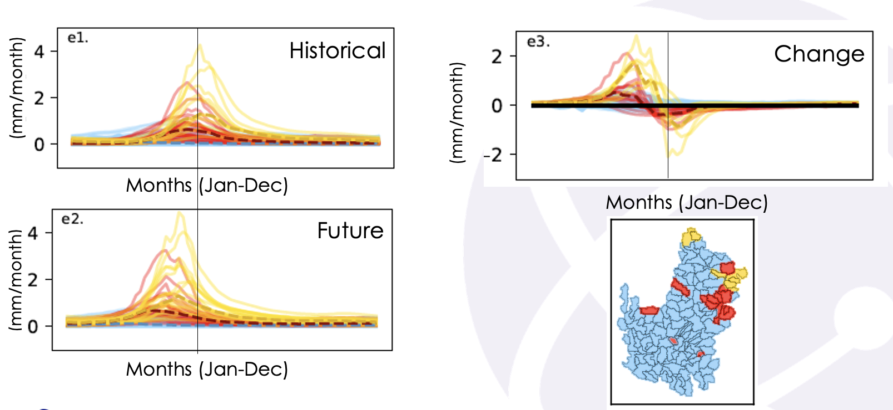
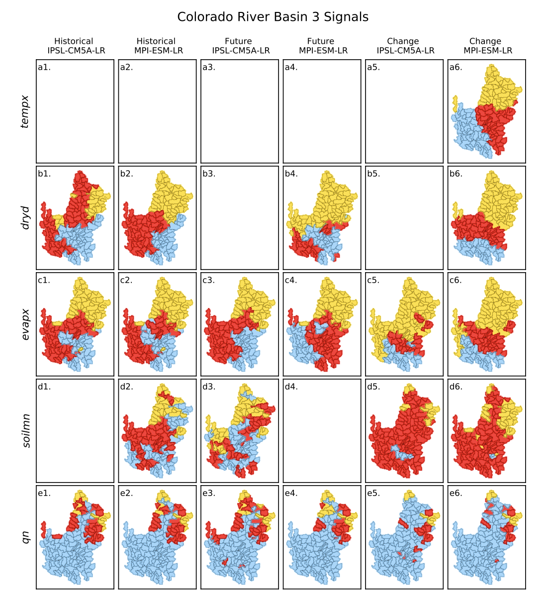
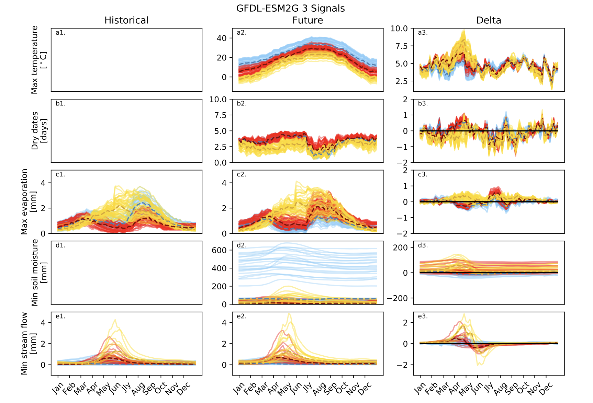
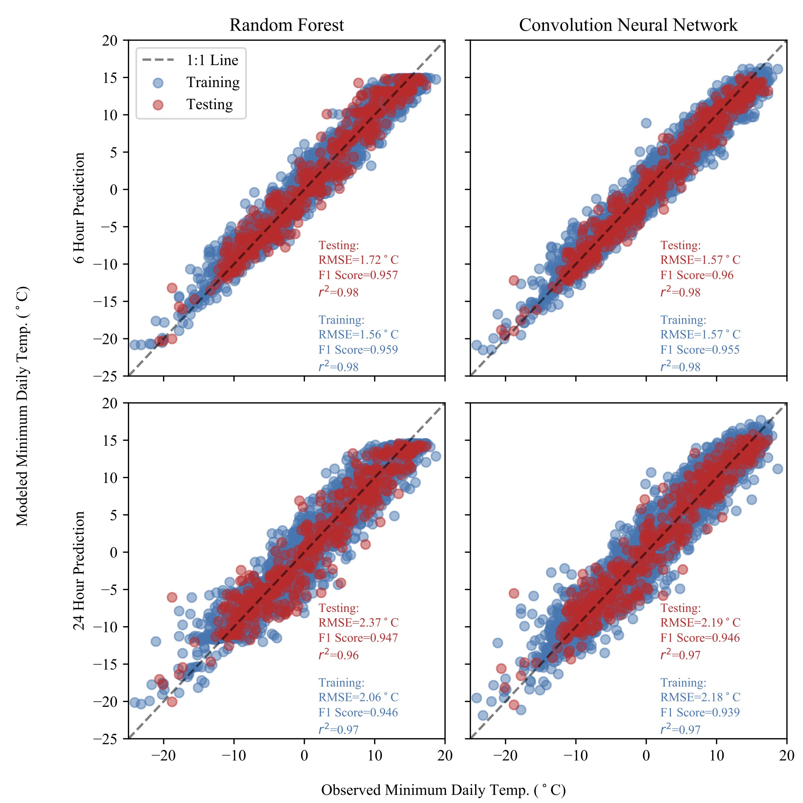
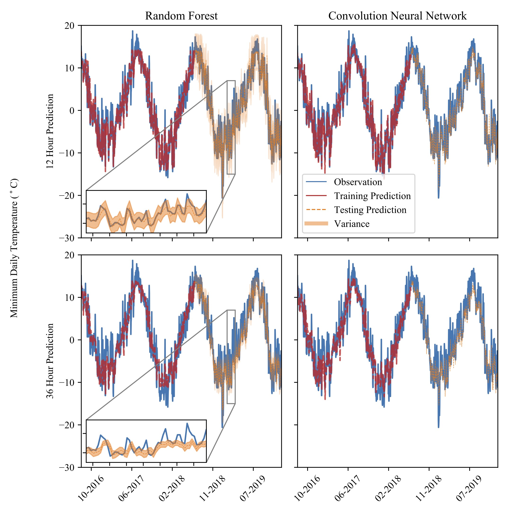
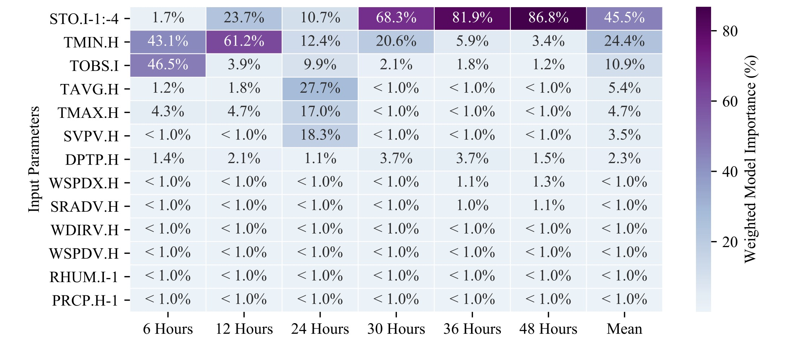

Geospatial Data Scientist | Climate & Energy | Hydrology
Methane Detection Platform
I was awarded a Phase I SBIR award though NOAA to create a methane emissions detection and quantification platform, called MethanEDART (The Methane Emissions Detection and Resource management Toolkit). I lead the conception and proposal development for the project, securing funding through a competitive peer-revie process, and managed the technical, administrative, and reporting aspects of the grant. In a short six-month period, along with a team of scientists, I was able to successfully train machine learning algorithms on satellite data and physical models to detect and quantify methane plumes from natural gas and oil wells, processing facilities, and landfills. We built a working prototype of a web tool to eventually develop a licensable software product targeted at providing quick detection results to oil and gas operators. The following describes the project methods and machine learning in greater detail.
Methane detection using satellite data has a fairly robust set of literature and in the past several years as become a much more competitive field. When we originally applied for MethanEDART funding (2023), the need for a comprehensive methane detection platform was clear and achievable. The market has since evolved dramatically over the past several years to become a much more competitive market (see Carbon Mapper). The commercial case for methane detection was initially reinforced by Inflation Reduction Act incentives, then eroded following the rollback of methane penalties under the Trump administration.
But let's get to the fun data stuff! Methane is a strong absorber of light in the near infrared (NIR) with three distinct peaks of absorption all within the NIR spectrum of light. Fortunately, there are many satellite products that collect data in the near infrared including LANDSAT, Sentinel 2, EMIT, Tanager, MethaneSAT (lost in space!), and more. As with pretty much any other satellite data investigation, trade-offs between spectral, spatial, and temporal resolution are important with hyperspectral products from instruments like EMIT offering hyperspectral bands at a high spatial resolution that are great for detecting Methane, but with relative longer periods of repeated overpasses. Other products, like Sentinel 2, offer more frequent overpasses (~once very 5 days) but with only 2 large bands within the requisite NIR absorption wavelengths. To pinpoint facility emissions, we need at least a spatial resolution of 100m. We started out using EMIT and Sentinel 2 data but many many more satellite products work for methane detection and which to choose depends both on your use case and who uses the product at the end of the day (science, government, or industry).
Next, we have to train a model to turn the satellite data into useful information regarding methane (detection or quantification). Unfortunately, there’s not much ground-based observations of methane concentration values that we can use. Most of the literature depends on physical models of methane plumes to train ML models, which then get used to detect real plumes. Once we have a physical model that can generate realistic methane plumes, we can embed that plume into real satellite imagery using Beer’s law which relates the concentration of a gas within a column to the absorption of light by the gas in the column. We then train a neural network on the embedded imagery to output the pixel concentration or a classification of plume or no-plume. We chose to use a relatively simple gaussian plume model in order to produce a bunch of plumes under various meteorological and emissions conditions to create a very large dataset for training. The tradeoff here is that there are more complex plume models that would give us more realistic methane plumes, but given the time constraints of the project we chose to produce a bunch of simple plumes to produce a large training dataset in a relatively short amount of time.
We trained several UNET convolution neural networks (CNNs) to output the pixel concentration of methane, a classification of plume or no plume, and the emissions centroid. UNETS are widely used in computer vision and imagery analysis problems because of their ability to interpret different features within the image as the convolution travels along the “decoder” or “contracting” path and then reconstructs the desired output along the “encoder” or “expanding” path to preserve the structure of the original image. My opinion is that this doesn’t matter much for the detection problem which relies mostly on the spectral pixel information. However, if we want to determine the emissions rate from a single facility which is producing a large methane plume, the structure of the plume ends up being very important and using a model that can learn from the shape of the plume is a big advantage.
Our results of training the models are encouraging, and the models predict both the plume concentration and plume mask extremely well. For the concentration of methane, you can see the model is missing some pixels at the low end of methane concentration in the figure below. The model also starts to under-predict the methane concentration at the highest concentrations. This is likely to pixel saturation where methane starts absorbing most of the light within the band. When inferring the emissions rate, the model still perform well but the spread in the data is more apparent. This makes sense. Determining how much methane is emitted from a point source is a lot more complicate and depends on wind speed, atmospheric stability, and other factors that will introduce a lot more noise into the data.
But wait! These models are still being trained on synthetic data! You might be skeptical of how these models might preform in the real world and you’d be correct. This problem ends up being a major sticking point for the entire field and one that we didn’t quite get to in our 6-month timeline. The standard way to validate these models on real world data is through controlled release experiments, where someone wheels a tank out into the field and releases methane at a constant rate timed with satellite overpasses. You can imagine that this doesn’t happen often and requires releasing large amounts of methane into the atmosphere, not exactly ideal. Other options are to compare against aerial data and models that rely on similar techniques.
Our approach was to cater our product toward early and fast detection for oil and gas operators and less toward the quantification of the emissions rate. Companies like Carbon Mapper, who had won contracts with the federal government to quantify methane for the basis of financial penalties, need accurate meteorology data which may take weeks to process. Our focus was to work with oil and gas operators to find leaks as quickly as possible, focusing on low-latency satellite products, so that they could fix leaks and avoid fines. It’s an interesting discussion around what makes data actionable and where you might make practical sacrifices in accuracy so that you can get real things done on the ground. That question is something that I feel really motivated by! Where can we find value in providing data that people need that doesn’t align exactly with what achieves the best validation statistics.
Here is a video of me presenting on some of this work!
CostMAPPRO: Pipeline Routing for CO2 Transport
At Carbon Solutions, our main focus was on building out Carbon Capture and Sequestration (CCS) infrastructure in smart and efficient ways. A big part of the CSS infrastructure problem is pipeline routing and optimization. Capturing emission tends to be the most expensive piece of (CCS). But siting and building pipelines, while relatively cheaper, has drawn significant backlash from public stakeholder who don’t always want pipelines built on or near their land. This problem has essentially halted major CCS project in Iowa. Those projects relied on clean fuel credits for ethanol in addition to the standard 45Q tax credit for storing carbon which allowed them to transport pretty small amounts of CO2 across several states and still be financially viable. That’s not true of most CCS projects and my personal opinion is that the juice maybe wasn’t worth the squeeze in the case of Iowa. However, the question remains, how do you route pipelines in the most efficient way while taking into account complex factors like build cost, public concerns, protected areas, etc?
In addressing the CO2 transport problem, I led software development for CostMAPPRO, a routing and cost algorithm based on geospatial analysis. The way CostMAPPRO is as follows:
1. We compiled geospatial data we thought pertinent either to pipeline cost or routing. This includes landcover, government land ownership, protected areas, population density, existing pipeline right-of-ways, transmission lines, roads, and rivers and other data.
2. For every value in these datasets we assign both a cost weight (how does this feature impact the cost of building a pipeline) and a routing weight (do we want to route towards or away from this feature). For linear features, we tweak the weights based on if this is a barrier (impeded the pipeline, rivers) or a corridor (somewhere we’d like the pipeline to route, existing right-of-ways). We can assign weights based on unique values like landcover, or based on linear equations for continuous data like population density.
3. Once we assign routing and cost weights, we produce both a routing and cost surface that incorporates each of the data sources into two surfaces. The cost surface describes how much a pipeline costs to build between pixels, and the routing surface describes how desirable or undesirable it is to build a pipeline between pixels (based on both cost and other factors outside of cost).
4. Next, we use Dijkstra’s algorithm to route pipelines between nodes. Boom, we’ve got an optimized pipeline route that incorporates all of the data described above and the cost of building that pipeline. The output depends heavily on how we assign weights which is sometimes based on concrete data (the cost of building pipeline on a slope of X%) and sometimes based on less quantifiable factors (how amenable people are to a pipeline in their neighborhood). The process allows us to customize the weights to suit different problems or clients.
Also, check out my k-shortest paths project for my newest innovation to deal with the uncertainty in the routing process.
Analyzing Watershed Behavior in a Changing Climate
At LANL, I worked on several projects that used future climate projection from Earth System Models (ESMs) as inputs into hydrologic models. This tells us how the hydrology of a watershed will change in the future due to climate change. We did this for the Colorado River Basin (CRB), but you end up with a lot of gridded output data that can be difficult to interpret. To deal with this I ran an unsupervised clustering algorithm on sub-watershed within the CRB basins to determine how different areas within the CRB exhibited similar behavior or similar changes in behavior.

We used the NMFk (Non-negative matrix factorization using k-means) algorithm, which our team developed in the Julia programming language (link). Let’s start by explaining how the algorithm works. We start with a feature dataset. In our case we have a 3d dataset of 6 drought indicators across 134 sub watersheds for 73 5-day periods throughout the year (6x134x73).
The fundamental task of NMF is to decompose a data matrix (a matrix of real numbers, R, with dimensions ) into two non-negative matrices so that
In our case, is the number of sub-watersheds (134 HUC8 sub-watersheds), and is the number of 5-day time periods throughout the year (73).
Note that is a positive integer (less than ) defining the unknown number of original features (signals) hidden in the data (Lin, 2007).
Here, a feature or signal is a unique temporal behavior that is identified among the 134 sub-watersheds but could be more broadly defined for other applications as any unique pattern of data present within a data matrix.
is often regarded as the feature matrix (i.e., representing the unique signals or features present the original data), and is called the mixing matrix capturing how the signals are mixed at each watershed.
The following animation shows how the NMFk algorithm iteratively decomposes the original data matrix into the feature and mixing matrices.
NMFk computes solutions for all possible numbers of signals k ranging from 1 to d (less than ) and then estimates the accuracy and robustness of these solution sets for different values of k.
For each k value, the robustness is estimated in NMFk by performing a series of NMF runs (e.g., 1,000) with random initial guesses W and H elements.
After that, the series of NMF solutions are grouped using a custom semi-supervised k-means clustering.
The customization to the original algorithm is to keep the number of solutions in each cluster equal to the number of NMF runs (e.g., 1,000).
The clustering is applied to measure how good a particular number of extracted signals, k, is to accurately and robustly describe the original data.
The optimal number of signals kopt is estimated automatically by the NMFk algorithm. A detailed description of NMFk can be found in Vesselinov et al.
(2018).
The figure below shows how NMFk is applied to the temporal dataset and what the geographic output might look like.

At the most basic level, we are sorting the annual temporal behavior of the sub-watersheds into similar groups based on drought indicators like evaporation, soil moisture, and runoff. We do this for two 30-year time periods representing historical (1970-1999) and future (2070-2099) behavior as well as the change between the two period (delta). The output from NMFk shows us where geographically and when during the annual cycle we might see changes in drought behavior.
Here is an example of what the output looks like for runoff for each of the temporal periods and geographically.

What you can see immediately is that th snowmelt signal in the spring is shifting earlier in the yellow and red watersheds.
The change figure shows how runoff will increase earlier in the year and decrease in late spring when snowmelt is typically at its peak.
We can also see geographically that this behavior matches the high elevation sub watershed in the san juan mountains where snowmelt is dominant.
The finding is not unexpected bu the algorithm allows us to cluster these watershed geographically based on their temporal behavior and then simplify additional analysis on snowmelt characteristics.
Here are a few more of these figures showing the output of NMFk both temporally and geographically for show.
Missing panels represent instances where the algorithm did not converge on a solution with distinct temporal behavior.
These take a bit of staring at to interpret but if you want to read our interpretation check out our publicaton:
Talsma et al., 2022.


Machine Learning for Frost Prediction
At Los Alamos, I was a part of a team of scientist funded through state grants to help local apricot farmers deal with seasonal frost mitigation. Weather can be variable in New Mexico during the spring, where the climate can either be sunny and hot or weather systems can bring in winter storms late in the spring. Further, complex topography tends to contribute toward cold-air pooling, where cold air funnels overnight into low lying areas create large disparities in temperature depending on small changes in topography. Late frost events can cause frost damage in budding apricots which destroys the yield for that year and temperature can vary widely across even a single farm.
Farmers deal with the frost in various ways through heated greenhouses, open barrel fires, or other mitigation efforts. However, some of these mitigation techniques are costly and knowing when to use them or not can be a stressful decision point for farmers. We had been collecting data for individual farms for several years and implemented a push notification system for alerting farmers when the temperature dropped below a certain threshold. We set out to determine if we could use this data to train custom models that would predict the temperature at the farm and could give advanced warning of low-temperature events that might damage crops. We started with station data from an established weather station in Alcalde and then attempted to transfer the model to a local farm (called “Freshies”) where we continued to train the model on data that we had collected.
We trained both random forest models and a couple of simple neural network configurations to predict the temperature at various intervals. We chose to predict temperature, rather than frost events, because damage occurs at different temperature at different times during the bud development and the bud can actually harden against frost if the beginning stages of development are particularly cold. Damage from heat can also occur during the summer months, which wasn’t a primary concern for this project but nonetheless a consideration. I do report an F1 score in addition to regression statistics to illustrate how we might judge performance of the alert system if we were to set a “damage threshold”.
Here's a scatter plot showing model performance for both the random forest and CNN configurations at a 6 hour lead time and a 24 hour lead time.

And here's what the model output looks as a time series. We used a time series split for training so that the model was not exposed to the most recent 20% of the data.

The following figure shows the feature importances for the input meteorology parameter at each lead time. What's really interesting here is that relative importance of the features changes as the lead times get longer. Soil temperature becomes much more important at longer lead times, likely because of the high thermal inertia of the ground/soil.

While we were able to create models using the Alcalde station data that outperformed the numerical weather forecast (6-h RMSE = 2-3°C) for the station location. The results of the tranfer learning did not work so well. The model failed to achieve the same performance after continuing to train the model on the Freshies farm data. While we designed these models to be compact enough to run on the edge, more complex models could make use of numerical weather forecasts or weather station data from a wider network of stations. I think this project illustrated how ML can be used to create custom solutions with greater specificity than you might get from tradition weather prediction methods.
k-Shortest Paths for Pipeline Routing
At Carbon Solutions, the framework we rely on for pipeline routing produces the optimal pipeline route based on the underlying routing surface. However, we only have data that describes some of the on-the-ground conditions and can miss really important details like whether a land-owner is interested in leasing out his land or if there’s a cemetery we don’t want to route through. As a way of providing routing options beyond a single ‘optimal’ solution, I implemented an algorithm to give multiple solutions that can then be analyzed for routing chokepoints or using a cost-benefit framework.
The algorithm for generating the k-shortest routes is pretty simple.
Called Yen’s algorithm, it eliminates nodes one-by-one and re-runs Dijkstra’s algorithm between each iteration until it eventually comes up with an exact solution for the k-shortest paths.
However, this ends up being extremely time-intensive and paths often differ by only a single node.
What we actually want is to introduce a limited overlap parameter into our algorithm.
Think about routing in google maps. I don’t want to see two routes that only differ by one or two blocks when I’m driving.
A real decision goes something like “do I take the absolute fastest route, or do I want to take the scenic route that is 10 minutes slower”.
The variety of options presented is sometimes more important than the exactness of the solution.
The problem can be described by k-shortest paths with limited overlap or kSPwLO algorithms.
We utilize the ESX algorithm for kSPwLO which is a modification of Yen’s algorithm that introduces a limited overlap parameter and an priority queue to produce approximate solutions much more quickly.
The prioritizaiton queue is essentially a set of heuristics for eliminating nodes. Here is an example pipeline routes produced using the ESX algorithm for different values of k.
Changing Hydrology of the Pajarito Plateau under Climate Change